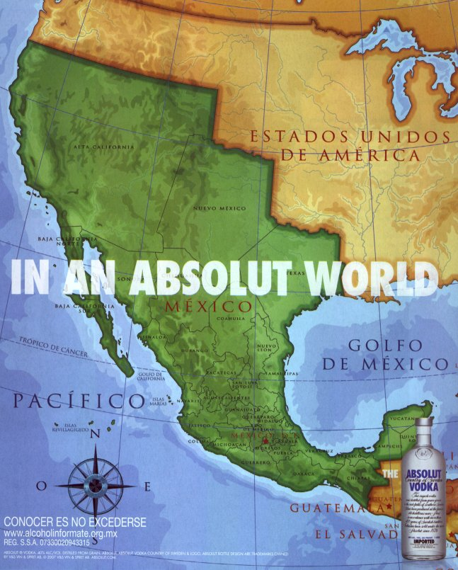

Intolerancia absoluta
Guillermo Valdés Lozano
2008-04-11 14:10:00-05:00
El vodka Absolut tiene una de las más ingeniosas campañas publicitarias, de hecho, se ha vuelto todo un icono del medio publicitario. Podríamos asegurar que no existe un consumidor que no haya visto algún anuncio de su conocida botella.
In An Absolut World es la actual campaña publicitaria, donde se juega con la idea del mundo al revés. Para México se hizo el siguiente anuncio, trata de un mapa de México el cual nos recuerda nuestro pasado, los tiempos en los que Antonio López de Santa Anna aún no malbarataba gran parte del territorio, que ahora es de los Estados Unidos de América.

Dicho anuncio sólo apareció en revistas nacionales y espectaculares de la Ciudad de México. De algún modo llegó a los medios de comunicación estadounidenses. Este anuncio levantó sentimientos racistas antimexicanos (¿más?) y las opiniones más radicales en contra de la empresa de esta bebida alcóholica, al grado que hay voces que incitan a no consumir los productos Absolut.
La empresa sueca ha retirado esta campaña y dado ha conocer un comunicado donde expresa que no hubo intensión de motivar a transgredir las fronteras o crear un sentimiento antiamericano en México.
Pero bueno... ¿qué los Estados Unidos no han navegado siempre con su bandera de libertad de expresión? ellos que aman tanto su bandera que hasta se la ponen de calzones, y que sin ningún reparo ridiculizan a latinos, musulmanes, judíos, canadienses, etc. bajo las faldas de la libertad de expresión; ellos que llevan la guerra a otros países en pro de la democracia y derechos humanos... ¿les ofende un mapa?... ¿pues qué acaso ignoran que las cosas alguna vez fueron así?.